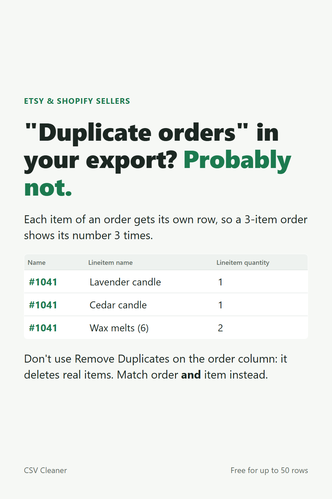

"Duplicate orders" in your export? Probably not.
Etsy's order items export and Shopify's orders export put each item of an order on its own row. An order with 3 items shows its order number 3 times. That's normal.
Don't do this
Excel's Remove Duplicates on the order number column keeps the first row of each order and deletes the rest: those are real items, so your item counts and sales drop without warning.
Do this instead
Match on the order number and the item (SKU or product name) together. Rows that still match on both are the real repeats. Rows with the same order and item but different numbers (a different quantity, say) are worth checking by hand.
The free CSV Cleaner does that check without deleting anything: it lists true repeats and the rows that disagree, keeps every row, and writes a plain-English log.
